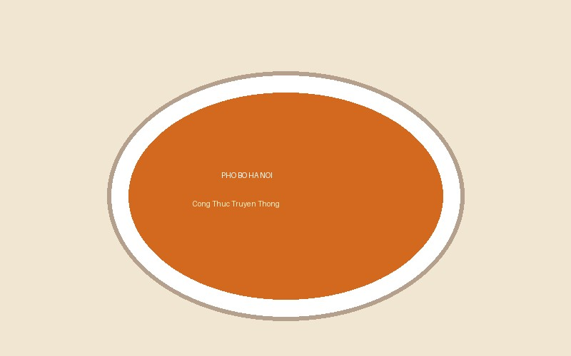

Phở Bò Hà Nội Truyền Thống
Hương vị phở bò nồng nàn với nước dùng trong veo, thơm nức mùi gừng hồi quế nướng hòa quyện cùng bánh phở mềm mượt và thịt bò tươi ngon.

Nguyên Liệu Chuẩn Bị
| Tên nguyên liệu | Số lượng | Đơn vị | Ghi chú |
|---|---|---|---|
| Xương ống bò | 1.5 | kg | Rửa sạch, chặt khúc lớn |
| Thịt thăn bò (bò tái) | 400 | gam | Thái lát mỏng |
| Bánh phở tươi | 800 | gam | Trần qua nước sôi |
| Gừng, hành tím | 100 | gam | Nướng cháy sém vỏ ngoài |
| Gia vị thảo mộc (Hoa hồi, quế, thảo quả) | 1 | gói | Rang thơm trước khi cho vào túi vải |
| Hành lá, rau mùi, húng quế | 200 | gam | Rửa sạch, thái nhỏ |
Các Bước Thực Hiện
- Sơ chế xương bò: Đun sôi một nồi nước, cho xương ống bò vào chần trong 5 phút để khử mùi hôi, sau đó vớt ra rửa sạch lại bằng nước lạnh.
- Hầm nước dùng: Cho xương bò vào nồi cùng 3 lít nước sạch, hầm nhỏ lửa trong khoảng 4-6 tiếng. Thường xuyên vớt bọt để nước dùng giữ được độ trong suốt.
- Tạo hương vị thảo mộc: Nướng gừng và hành tím cho dậy mùi thơm. Rang thơm hoa hồi, quế, thảo quả rồi cho vào túi lọc vải thả vào nồi nước hầm trước khi hoàn tất 1 giờ. Nêm nếm muối, nước mắm ngon và đường phèn cho vừa khẩu vị.
- Trình bày và thưởng thức: Chần bánh phở qua nước sôi rồi xếp vào bát tô. Xếp thịt bò thái mỏng lên trên, rắc hành lá và chan nước dùng sôi sùng sục. Thưởng thức nóng cùng chanh, ớt tươi và quẩy giòn.